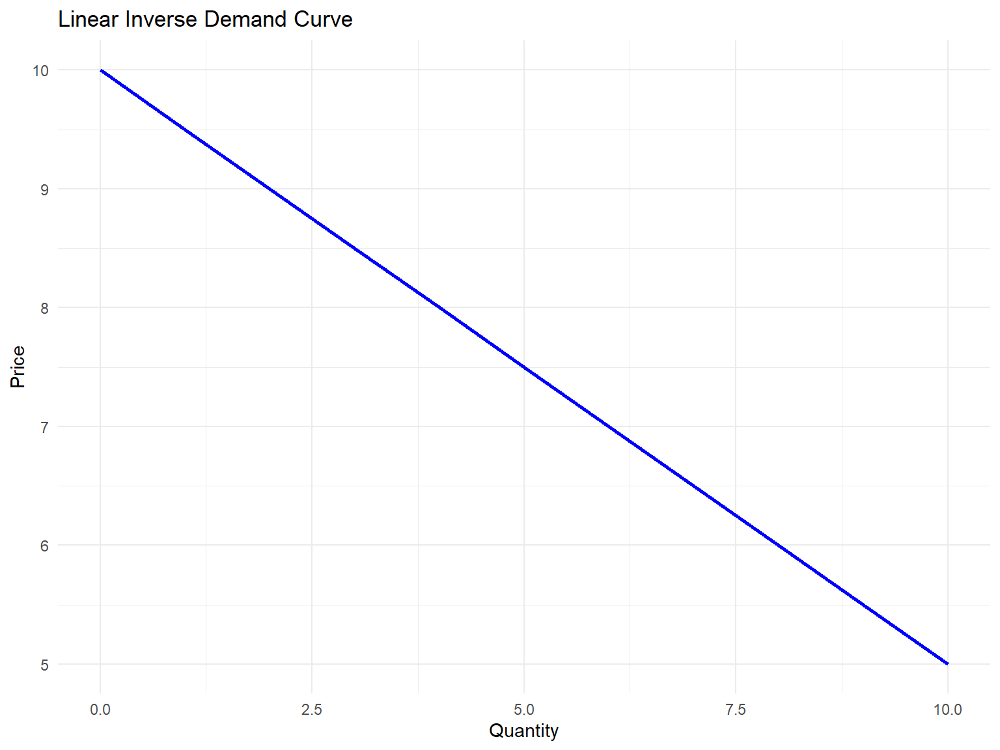
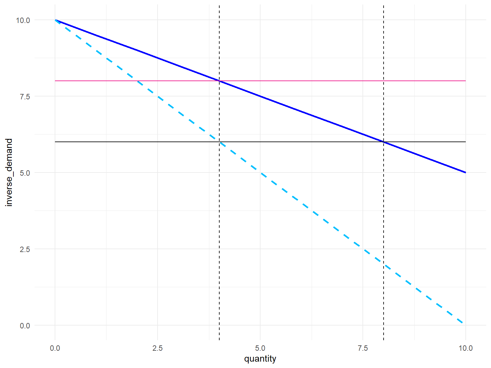
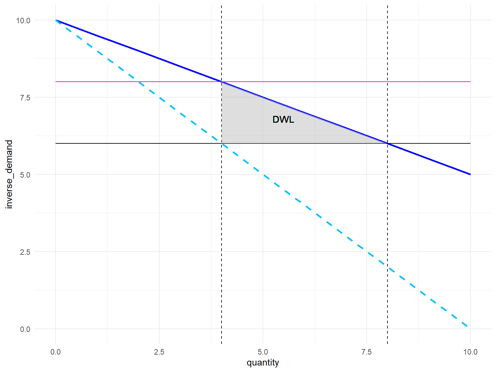
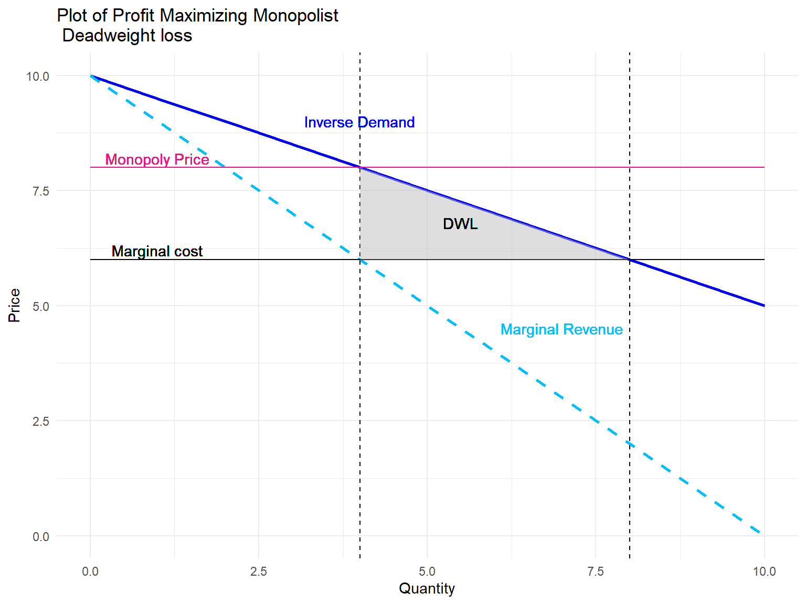

2024-01-05
Assignment 1 problem 2 requested a graphical representation in RStudio of the concepts of welfare and deadweight loss in the context of a monopoly.
This is a sample code to plot monopoly demand, marginal cost, marginal revenue, and the area of deadweight loss.
Please read pages 33-36 of the book “Industrial Organization: A Strategic Approach” by Church and Ware (2000) for a thourghouh description of the concepts and formulas employed.
library(tidyverse)
rm(list=ls())
# Set up data for a linear inverse demand curve
quantity <- seq(0, 10, by = 1)
a <- 10
b <- 0.5
inverse_demand <- 10 - 0.5 * quantity # Linear inverse demand equation: P = 10 - 0.5Q
marginalcost <- 6
pricemonopoly <- (a+marginalcost)/2
quantitymonopoly <- (a-marginalcost)/(2*b)
quantitysocial <- (a-marginalcost)/(b)
# Create a data frame
df_inverse_demand <- data.frame(quantity, inverse_demand)# Plot the linear inverse demand curve
p_inverse_demand <- ggplot(df_inverse_demand, aes(x = quantity, y = inverse_demand)) +
geom_line(color = "blue", size = 1, linetype = "solid") +
# Add labels
labs(title = "Linear Inverse Demand Curve",
x = "Quantity",
y = "Price") +
# Customize the theme
theme_minimal()
# Print the plot
print(p_inverse_demand)
# Plot the linear inverse demand curve with marginal revenue
p_inverse_demand <- ggplot(df_inverse_demand, aes(x = quantity)) +
geom_line(aes(y = inverse_demand), color = "blue", size = 1, linetype = "solid", ) +
geom_line(aes(y = marginal_revenue), color = "deepskyblue", size = 1, linetype = "dashed", ) +
geom_line(aes(y = marginalcost), color = "black", size = 0.5, linetype = "solid", ) +
geom_line(aes(y = pricemonopoly), color = "deeppink2", size = 0.5, linetype = "solid",) +
geom_vline(xintercept = quantitymonopoly, linetype = "dashed",) +
geom_vline(xintercept = quantitysocial, linetype = "dashed",) +
theme_minimal()
print(p_inverse_demand)
# Add the Deadweight loss
p_inverse_demand <- p_inverse_demand +
geom_polygon(data = data.frame(x = c(quantitymonopoly, quantitymonopoly, quantitysocial),
y = c(pricemonopoly, marginalcost, marginalcost)),
aes(x = x, y = y), fill = "gray", alpha = 0.5) +
geom_text(x=(quantitymonopoly+1.5), y=(pricemonopoly-1.2), label="DWL")
print(p_inverse_demand)
p_inverse_demand <- p_inverse_demand + ggtitle("Plot of Profit Maximizing Monopolist \n Deadweight loss") +
xlab("Quantity") + ylab("Price") +
geom_text(x=(quantitymonopoly-3), y=(pricemonopoly+0.2), label="Monopoly Price", color="deeppink2") +
geom_text(x=(quantitymonopoly-3), y=(marginalcost+0.2), label="Marginal cost", color = "black") +
geom_text(x=(quantitymonopoly), y=(pricemonopoly+1), label="Inverse Demand", color = "blue") +
geom_text(x=(quantitymonopoly+3), y=(pricemonopoly-3.5), label="Marginal Revenue", color = "deepskyblue")
# Print the plot
print(p_inverse_demand)